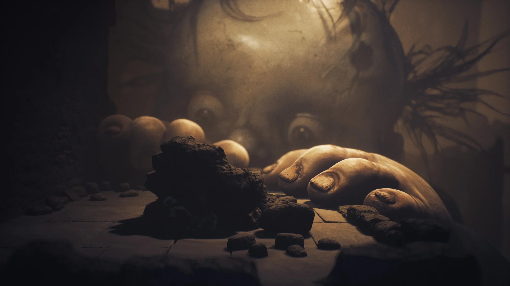
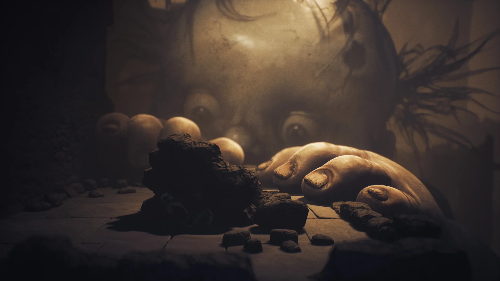

Little Nightmares III est un jeu vidéo d'aventure, d'horreur et de plates-formes développé par Supermassive Games et publié par Bandai Namco Entertainment, sorti en octobre 2025 sur Nintendo Switch, PlayStation 4, PlayStation 5, Microsoft Windows, Xbox One et Xbox Series. Il s'agit d'une suite aux deux premiers jeux Little Nightmares et Little Nightmares II. Vous incarnez Low et Alone, meilleurs amis depuis leur rencontre dans ce cauchemar vivant. Ils possèdent chacun un objet emblématique : un arc pour Low et une clé à molette pour Alone. En travaillant ensemble, ils seront capables de se faufiler à travers des passages cachés, se hisser mutuellement par-dessus d'énormes obstacles et veiller l'un sur l'autre.
Voici les personnages principaux:
Low alias le garçon au masque de corbeau est, avec Alone, l'un des deux protagonistes du jeu Little Nightmares III.
Alone alias la fillette aux couettes est l'une des deux protagonistes du jeu Little Nightmares III. Elle est l'amie de Low, avec lequel elle tente de s'échapper du Nulle-Part.
Si voulez en savoir plus, vous pouvez voir des images et le trailer du jeu:
Voici quelques images du jeu :

 

Voici le trailer du jeu:
Si vous voulez acheter le jeu cliquez sur les liens si-dessous